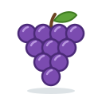

Unit 20
生果同菜Fruit & Vegetables
香蕉 提子 芒果 菜心 番茄 at the 街市: measure words for them, buying by the catty (幾多錢一斤呀？ 我要兩斤), and 啲 for "some".
Learn
At the market
Fruit and vegetables; 一條 一粒 一棵; 斤, 半斤 and 斤半; 幾多錢一斤; 一共; and 啲.
GameWet Market
Sort fruit from vegetables, read the price signs, buy by the catty, and work out what it comes to.
GameWrite It
Write 斤, 新 and 共 stroke by stroke with your finger: trace, then from memory, then 默書 from what you hear.
WritingWriting Sheet
Print a practice sheet: each character stroke by stroke in Hong Kong order, to trace and then write.

GameTone Detective
Hear fruit, vegetables and prices and pick their tones. 甜 or 酸?
SpeakingSay It Back
Record yourself and compare your tones with a native speaker's pitch curve.